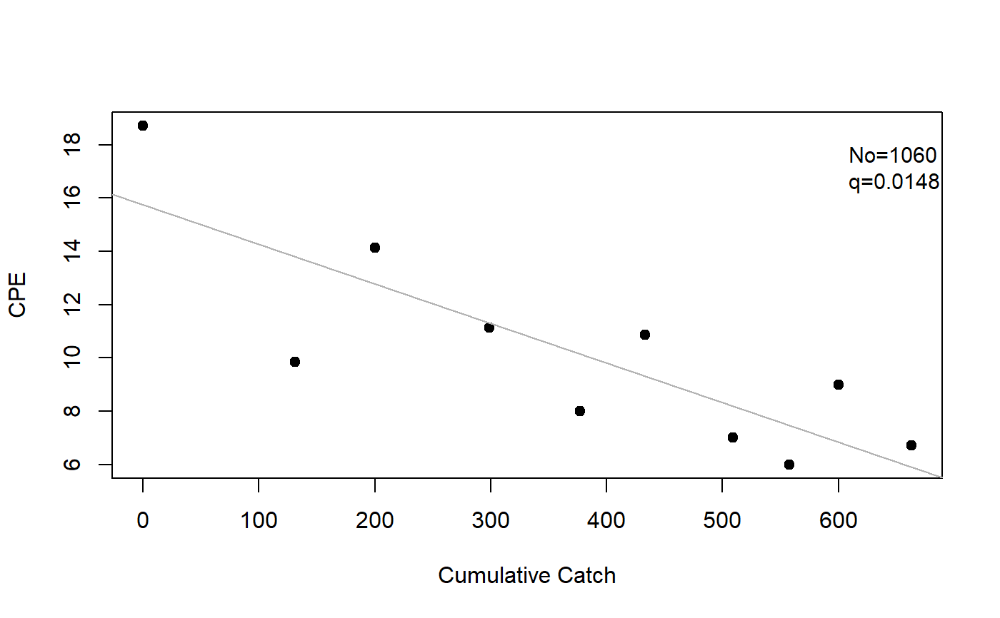

Computes the Leslie or DeLury population estimate from catch and effort data.
Source:R/depletion.R
depletion.RdComputes the Leslie or DeLury estimates of population size and catchability coefficient from paired catch and effort data. The Ricker modification may also be used.
depletion(catch, effort, method = c("Leslie", "DeLury", "Delury"), Ricker.mod = FALSE) # S3 method for depletion summary(object, parm = c("all", "both", "No", "q", "lm"), verbose = FALSE, ...) # S3 method for depletion coef(object, parm = c("all", "both", "No", "q", "lm"), ...) # S3 method for depletion confint(object, parm = c("all", "both", "No", "q", "lm"), level = conf.level, conf.level = 0.95, ...) # S3 method for depletion anova(object, ...) # S3 method for depletion rSquared(object, digits = getOption("digits"), percent = FALSE, ...) # S3 method for depletion plot(x, xlab = NULL, ylab = NULL, pch = 19, col.pt = "black", col.mdl = "gray70", lwd = 1, lty = 1, pos.est = "topright", cex.est = 0.95, ...)
Arguments
| catch | A numeric vector of catches of fish at each time. |
|---|---|
| effort | A numeric vector of efforts expended at each time. |
| method | A single string that indicates which depletion method to use |
| Ricker.mod | A single logical that indicates whether to use the modification proposed by Ricker (=TRUE) or not (=FALSE, default). |
| object | An object saved from the |
| parm | A specification of which parameters are to be given confidence intervals, either a vector of numbers or a vector of names. If missing, all parameters are considered. |
| verbose | A logical that indicates whether a reminder of the method used should be printed with the summary results. |
| … | Additional arguments for methods. |
| level | Same as |
| conf.level | A single number that represents the level of confidence to use for constructing confidence intervals. |
| digits | The number of digits to round the |
| percent | A logical that indicates if the |
| x | An object saved from the |
| xlab | A label for the x-axis. |
| ylab | A label for the y-axis. |
| pch | A numeric that indicates the type of plotting character. |
| col.pt | A string that indicates the color of the plotted points. |
| col.mdl | A string that indicates the color of the fitted line. |
| lwd | A numeric that indicates the line width of the fitted line. |
| lty | A numeric that indicates the type of line used for the fitted line. |
| pos.est | A single string to identify where to place the estimated population estimate and catchability on the plot. Can be set to one of |
| cex.est | A single numeric that identifies the character expansion value for the estimated population estimate and catchability placed on the plot. |
Value
A list with the following items:
method A string that indicates whether the
"Leslie"or"DeLury"model was used.catch The original vector of catches.
effort The original vector of efforts.
cpe A computed vector of catch-per-unit-effort for each time.
KorE A computed vector of cumulative catch (K; Leslie method) or effort (E; DeLury method).
lm The
lmobject from the fit of CPE on K (Leslie method) or log(CPE) on E (DeLury method).est A 2x2 matrix that contains the estimates and standard errors for No and q.
Details
For the Leslie method, a linear regression model of catch-per-unit-effort on cumulative catch prior to the sample is fit. The catchability coefficient (q) is estimated from the negative of the slope and the initial population size (No) is estimated by dividing the intercept by the catchability coefficient. If Ricker.mod=TRUE then the cumulative catch is modified to be the cumulative catch prior to the sample plus half of the catch of the current sample.
For the DeLury method, a linear regression model of log (catch-per-unit-effort) on cumulative effort is fit. The catchability coefficient (q) is estimated from the negative of the slope and the initial population size (No) is estimated by dividing the intercept as an exponent of e by the catchability coefficient. If Ricker.mod=TRUE then the cumulative effort is modified to be the cumulative effort prior to the sample plus half of the effort of the current sample.
Standard errors for the catchability and population size estimates are computed from formulas on page 298 (for Leslie) and 303 (for DeLury) from Seber (2002). Confidence intervals are computed using standard large-sample normal distribution theory with the regression error df.
testing
The Leslie method without the Ricker modification and the DeLury method with the Ricker modification matches the results from deplet in fishmethods for the darter (from fishmethods), LobsterPEI and BlueCrab from FSAdata, and SMBassLS for N0 to whole numbers, the SE for No to one decimal, q to seven decimals, and the SE of q to at least five decimals.
The Leslie method matches the results of Seber (2002) for N0, q, and the CI for Q but not the CI for N (which was so far off that it might be that Seber's result is incorrect) for the lobster data and the q and CI for q but the NO or its CI (likely due to lots of rounding in Seber 2002) for the Blue Crab data.
The Leslie and DeLury methods match the results of Ricker (1975) for No and Q but not for the CI of No (Ricker used a very different method to compute CIs).
IFAR Chapter
10-Abundance from Depletion Data.
References
Ogle, D.H. 2016. Introductory Fisheries Analyses with R. Chapman & Hall/CRC, Boca Raton, FL.
Ricker, W.E. 1975. Computation and interpretation of biological statistics of fish populations. Technical Report Bulletin 191, Bulletin of the Fisheries Research Board of Canada. [Was (is?) from http://www.dfo-mpo.gc.ca/Library/1485.pdf.]
Seber, G.A.F. 2002. The Estimation of Animal Abundance. Edward Arnold, Second edition (reprinted).
See also
Examples
## Leslie model examples # no Ricker modification l1 <- depletion(SMBassLS$catch,SMBassLS$effort,method="Leslie") summary(l1)#> Estimate Std. Err. #> No 1.060296e+03 1.692676e+02 #> q 1.484403e-02 3.520491e-03summary(l1,verbose=TRUE)#>#> Estimate Std. Err. #> No 1.060296e+03 1.692676e+02 #> q 1.484403e-02 3.520491e-03summary(l1,parm="No")#> Estimate Std. Err. #> No 1060.296 169.2676rSquared(l1)#> [1] 0.6896648#> [1] 69cbind(Est=coef(l1),confint(l1))#> Est 95% LCI 95% UCI #> No 1.060296e+03 6.699638e+02 1.450627e+03 #> q 1.484403e-02 6.725759e-03 2.296229e-02cbind(Est=coef(l1,parm="No"),confint(l1,parm="No"))#> Est 95% LCI 95% UCI #> No 1060.296 669.9638 1450.627cbind(Est=coef(l1,parm="q"),confint(l1,parm="q"))#> Est 95% LCI 95% UCI #> q 0.01484403 0.006725759 0.02296229summary(l1,parm="lm")#> #> Call: #> stats::lm(formula = cpe ~ K) #> #> Residuals: #> Min 1Q Median 3Q Max #> -3.9373 -1.3879 0.3295 1.5023 2.9752 #> #> Coefficients: #> Estimate Std. Error t value Pr(>|t|) #> (Intercept) 15.73906 1.51266 10.405 6.31e-06 *** #> K -0.01484 0.00352 -4.216 0.00293 ** #> --- #> Signif. codes: 0 ‘***’ 0.001 ‘**’ 0.01 ‘*’ 0.05 ‘.’ 0.1 ‘ ’ 1 #> #> Residual standard error: 2.295 on 8 degrees of freedom #> Multiple R-squared: 0.6897, Adjusted R-squared: 0.6509 #> F-statistic: 17.78 on 1 and 8 DF, p-value: 0.00293 #>plot(l1)# with Ricker modification l2 <- depletion(SMBassLS$catch,SMBassLS$effort,method="Leslie",Ricker.mod=TRUE) summary(l2)#> Estimate Std. Err. #> No 1.077571e+03 1.778035e+02 #> q 1.525078e-02 3.911632e-03cbind(Est=coef(l2),confint(l1))#> Est 95% LCI 95% UCI #> No 1.077571e+03 6.699638e+02 1.450627e+03 #> q 1.525078e-02 6.725759e-03 2.296229e-02plot(l2)## DeLury model examples # no Ricker modification d1 <- depletion(SMBassLS$catch,SMBassLS$effort,method="DeLury") summary(d1)#> Estimate Std. Err. #> No 1.098503e+03 1.916049e+02 #> q 1.319375e-02 3.585777e-03summary(d1,parm="q")#> Estimate Std. Err. #> q 0.01319375 0.003585777summary(d1,verbose=TRUE)#>#> Estimate Std. Err. #> No 1.098503e+03 1.916049e+02 #> q 1.319375e-02 3.585777e-03rSquared(d1)#> [1] 0.6285719cbind(Est=coef(d1),confint(d1))#> Est 95% LCI 95% UCI #> No 1.098503e+03 6.566616e+02 1.540345e+03 #> q 1.319375e-02 4.924937e-03 2.146257e-02summary(d1,parm="lm")#> #> Call: #> stats::lm(formula = log(cpe) ~ E) #> #> Residuals: #> Min 1Q Median 3Q Max #> -0.29314 -0.21203 0.03796 0.16974 0.26238 #> #> Coefficients: #> Estimate Std. Error t value Pr(>|t|) #> (Intercept) 2.673692 0.134000 19.953 4.15e-08 *** #> E -0.013194 0.003586 -3.679 0.00622 ** #> --- #> Signif. codes: 0 ‘***’ 0.001 ‘**’ 0.01 ‘*’ 0.05 ‘.’ 0.1 ‘ ’ 1 #> #> Residual standard error: 0.228 on 8 degrees of freedom #> Multiple R-squared: 0.6286, Adjusted R-squared: 0.5821 #> F-statistic: 13.54 on 1 and 8 DF, p-value: 0.006224 #>plot(d1)# with Ricker modification d2 <- depletion(SMBassLS$catch,SMBassLS$effort,method="DeLury",Ricker.mod=TRUE) summary(d2)#> Estimate Std. Err. #> No 1.150420e+03 1.876083e+02 #> q 1.319375e-02 3.585777e-03cbind(Est=coef(d2),confint(d2))#> Est 95% LCI 95% UCI #> No 1.150420e+03 7.177940e+02 1.583045e+03 #> q 1.319375e-02 4.924937e-03 2.146257e-02cbind(Est=coef(d2,parm="q"),confint(d2,parm="q"))#> Est 95% LCI 95% UCI #> q 0.01319375 0.004924937 0.02146257plot(d2)